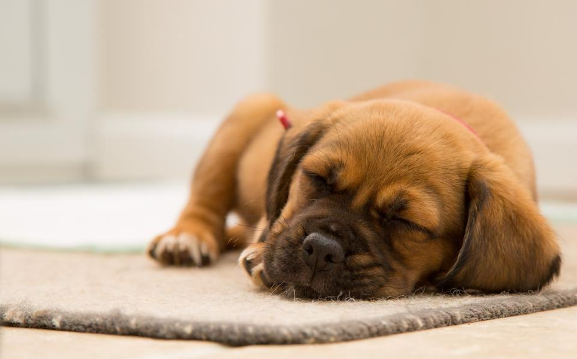

Före & efter
Några av våra fyrbenta kunder – före och efter besöket.
- 2026

Vilgot
Klippt av eleven Hampus på provdagen – godkänd med beröm.
- 2026

Stina
Första helklippningen för en elev i termin två, med Tobias vid bordet.
- 2025

Bambi
Matte klipper nu själv mellan besöken, efter två dagar på skolan.
- 2025

Rex
Förstaårselevernas favorit – lugn, stor och tålmodig med nybörjare.
- 2026

Pärlan
Svår filt och en nervös hund – Agneta tog det själv.
- 2025

Gizmo
Tre timmar, två elever och en lärare – och en jämn teddyklippning.


Kunder i elevsalongen
Eva-Karin S. · Skövde”Det tog tre och en halv timme, men Stina har aldrig varit så jämnt klippt. Och det kostade hälften.”
Hans R. · Tibro”Rex har varit modellhund för bad och kloklipp i tre år. Eleverna älskar honom och han älskar godiset.”
Marie G. · Falköping”Två dagar på skolan och pudeln slipper åka till frisör varje månad. Nu klipper jag ansikte och tassar själv.”